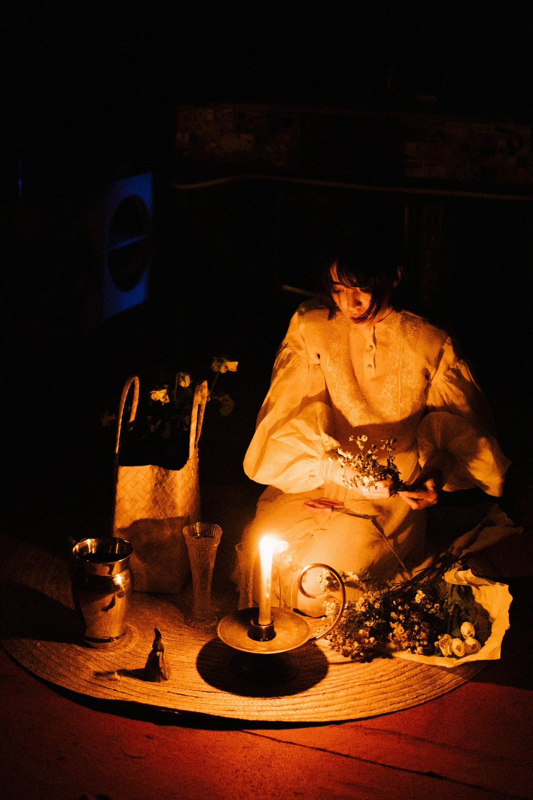

Actor · Playwright · Berlin
Begin Here
Eri Dürr is a Filipino-French actor and emerging playwright based in Berlin, working at the intersection of physical theatre, animist cosmology, and the liminal space between waking and dreaming.
Her practice is rooted in Meisner technique, developed through training with Angeli Bayani, Matthias Schott, and James Price. She holds a full-tuition scholarship to James Price's conservatory at The Acting Studio New York (2026).
Her stage credits include Ballhaus Naunynstraße, Berlin, and Miriam College Manila — including Fantine in Les Misérables and leads in works by Layeta Bucoy and Arielle Magno.
She is a member of the AFSAR acting community and is currently in inquiry with the Butoh collective 4rude Berlin.
Training
Gallery

Performance
Theatre
Film & TV
Writing
In Progress
Contact
For casting, collaboration, representation, or press — reach out by email or Instagram. Based in Berlin, available internationally.